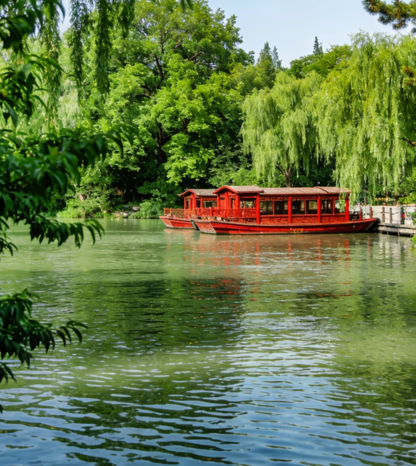
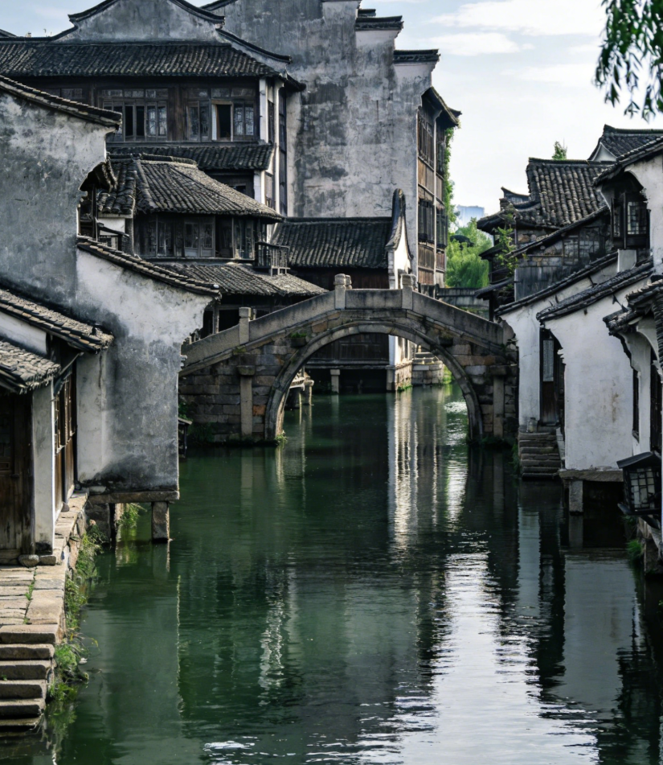
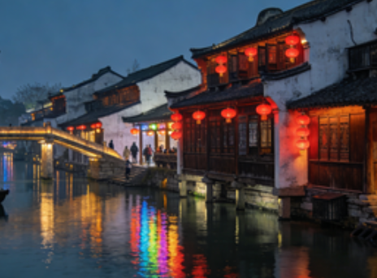
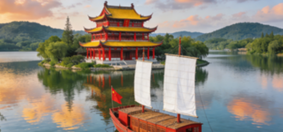
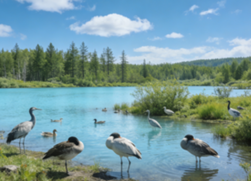
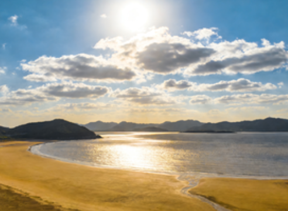
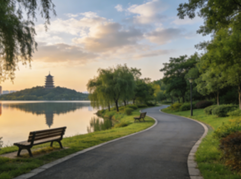
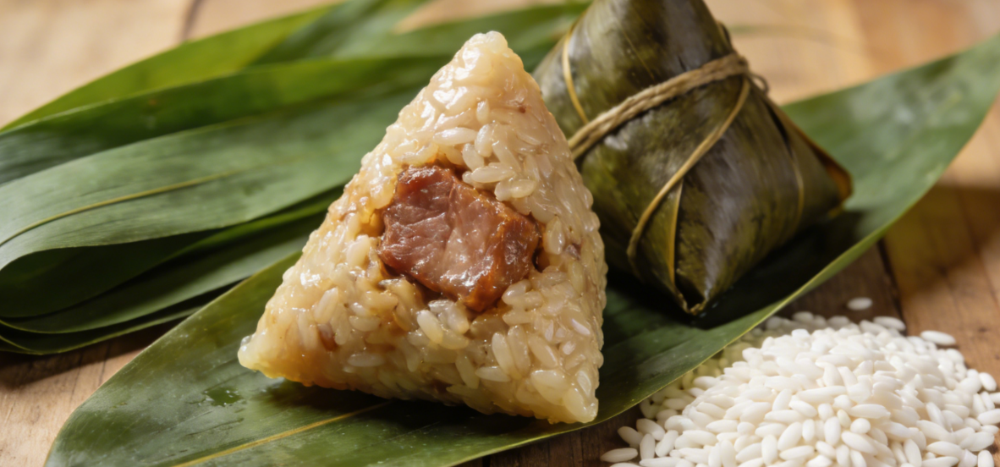
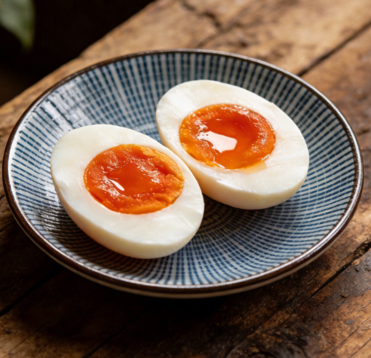
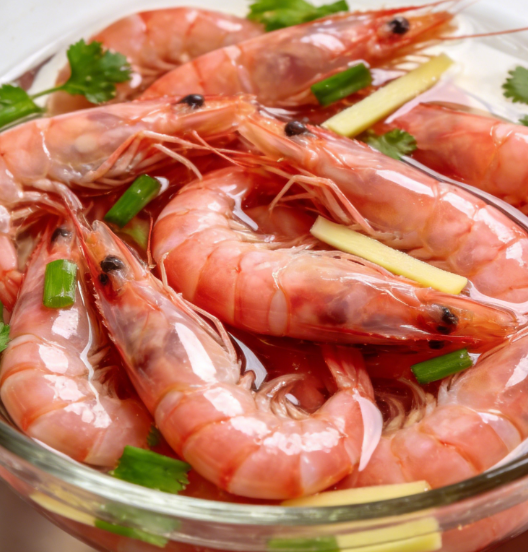

City Overview
Jiaxing, also known as Hecheng, is located in northeastern Zhejiang Province, in the heart of the Yangtze River Delta's Hangjiahu Plain. As a vital city in the Yangtze River Delta urban agglomeration, it borders Shanghai to the east, Suzhou to the north, Hangzhou to the west, and the Hangzhou Bay to the south. With its unparalleled geographical advantages, Jiaxing has long been celebrated as the "Land of Fish and Rice" and the "Home of Silk."
With a profound historical and cultural heritage, Jiaxing is recognized as a National Famous Historical and Cultural City. It is home to world-renowned water towns such as Xitang and Wuzhen, and holds a special place in Chinese history as one of the birthplaces of the Communist Party of China — the First National Congress concluded aboard the legendary Red Boat on Nanhu Lake in 1921, endowing the city with a unique revolutionary cultural identity.
Jiaxing enjoys a subtropical monsoon climate with four distinct seasons — mild and humid throughout the year. The city is crisscrossed by a dense network of rivers and dotted with numerous lakes, creating a distinctive Jiangnan water town landscape. Covering a total area of 4,275.05 square kilometers with a population of approximately 5.5 million, Jiaxing administers 2 districts, 2 counties, and 3 county-level cities.


Birthplace of the CPC
The First National Congress of the Communist Party of China concluded aboard the legendary Red Boat on Nanhu Lake in 1921, making Jiaxing a sacred place in Chinese revolutionary history.
World Internet Conference
Wuzhen serves as the permanent host of the World Internet Conference, connecting Jiaxing with the global digital community and showcasing China's technological advancement.
Ancient Water Towns
Home to UNESCO-recognized water towns including Xitang and Wuzhen, Jiaxing preserves the most authentic Jiangnan water town architecture and lifestyle dating back centuries.
Culinary Heritage
Renowned as the hometown of Chinese zongzi culture, Jiaxing's cuisine features delicate flavors rooted in Jiangnan traditions, from the iconic Jiaxing zongzi to Hangbai chrysanthemum tea.
Geographical Advantage
Within 100 kilometers of Shanghai, Hangzhou, and Suzhou, serving as a crucial transportation hub and logistics center in the Yangtze River Delta.
City Honors
China Excellent Tourism City, National Garden City, National Hygienic City, and National Civilized City — a harmonious blend of red culture, water town heritage, and folk traditions.

National Famous City
Recognized as a National Famous Historical and Cultural City, Jiaxing boasts over 1,700 years of recorded history since the Qin Dynasty.
Birthplace of Revolution
The Red Boat on Nanhu Lake symbolizes the founding spirit of the Communist Party of China, making Jiaxing a sacred revolutionary site.
Digital Innovation Hub
Home to the permanent venue of the World Internet Conference, Jiaxing is at the forefront of China's digital transformation.
Golden Triangle Location
Perfectly positioned between Shanghai, Hangzhou, and Suzhou, Jiaxing enjoys unparalleled access to the Yangtze Delta's economic powerhouses.


Red Boat Culture
In 1921, the First National Congress of the CPC concluded on Nanhu Lake, establishing the "Red Boat Spirit" — pioneering, striving, and dedication.
Water Town Heritage
Xitang and Wuzhen preserve the quintessential Jiangnan water town landscape, with ancient bridges, canal-side houses, and stone-paved alleys dating back to the Ming and Qing dynasties.
Silk & Weaving
Known as the "Home of Silk," Jiaxing has been a center of silk production for centuries, with traditional weaving techniques still practiced today.
South Mooncake Tradition
Jiaxing's South Mooncake (Nanyue) culture dates back to the Qing Dynasty, featuring exquisite craftsmanship and symbolic meanings of reunion and harvest.


Nanhu Lake
The "Pearl of Jiangnan," Nanhu Lake features the iconic Mid-Lake Island, mist-covered waters, and the historic Smoke Rain Tower — one of China's most famous lake landscapes.
Haining Tide
The Qiantang River tidal bore in Haining, Jiaxing, is one of the world's most spectacular natural phenomena, drawing millions of visitors during the Mid-Autumn Festival.
Canal Network
The ancient Grand Canal flows through Jiaxing, creating a vast network of waterways that define the city's unique "Venice of the East" character.
Botanical Gardens
From the elegant South Lake Botanical Garden to the scenic North Ski Area, Jiaxing offers diverse natural experiences across all four seasons.



Jiaxing Zongzi
The iconic sticky rice dumpling wrapped in bamboo leaves, Jiaxing Zongzi is renowned nationwide. The Wufangzhai brand has been a household name for over a century.
Nanhu Lotus Wine
Brewed with local lotus flowers from Nanhu Lake, this traditional rice wine embodies the poetic elegance of Jiangnan's water town culture.
Hangbai Chrysanthemum Tea
Grown in the Haining region, Hangbai chrysanthemum is prized for its medicinal properties and delicate floral aroma, enjoyed as both tea and cuisine ingredient.
South Lake Fish Dishes
Freshwater fish from Nanhu Lake are prepared in traditional Jiangnan styles — braised, steamed, or in soup — showcasing the region's aquatic bounty.